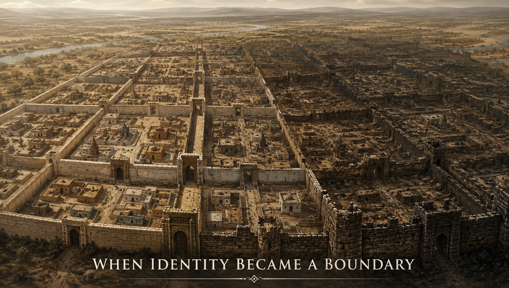
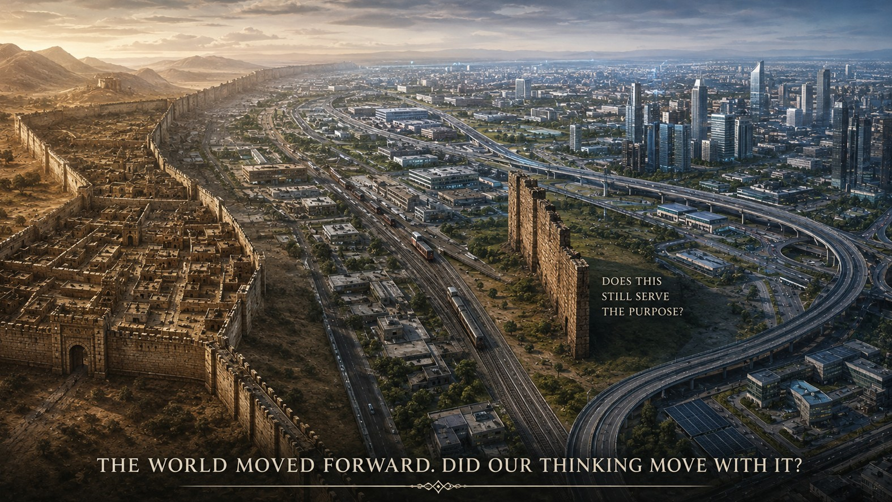
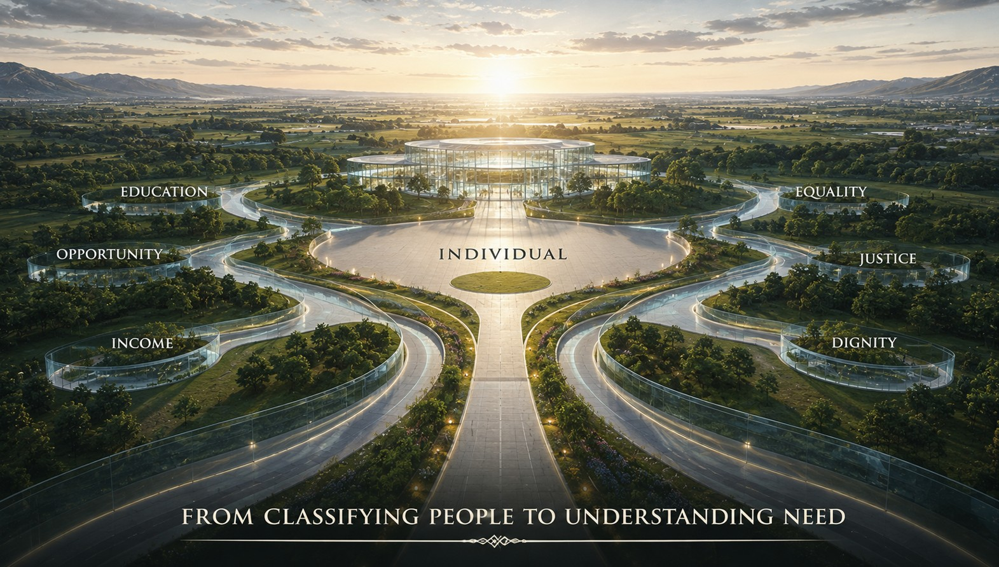

THE IDENTITY PARADOX OF THE 21st CENTURY
The need for a second thought — a question beyond the obvious
There are some questions we ask because we want an answer.
And there are some questions we ask because the question itself has stopped being questioned.
Caste may be one of them.
This is not an article against caste.
It is not an attack on any community.
It is not an attempt to erase history.
It is a second thought about the purpose of caste identity in the 21st century.
Because sometimes the most important question about a system is not:
“Why was it created?”
but:
“What purpose does it serve today?”

WHEN IDENTITY WAS A NECESSITY
There was a time when a large section of society struggled simply to achieve a reasonable standard of living.
Education was limited.
Economic mobility was limited.
Technology was limited.
Transportation was limited.
Occupational choices were often inherited.
For many people, poverty was not simply a temporary financial condition.
It could become a condition passed from one generation to another.
In such a society, identifying communities facing social and economic disadvantage had an important purpose.
If society could not identify disadvantage, how could it begin to correct it?
Recognition was necessary.
Support was necessary.
Social reform was necessary.
Economic upliftment was necessary.
But something else happened along the way.
The identity used to recognize disadvantage began to become a boundary between people.
WHEN IDENTIFICATION BECAME CLASSIFICATION
An identity can help society understand a problem.
But an identity can also become a tool for separation.
What began as a way of describing social position could become a way of deciding:
Who is equal?
Who is not?
Who can enter?
Who cannot?
Who can marry?
Who cannot?
Who belongs?
Who does not?
And in its darkest manifestations, caste prejudice has contributed to violence, exclusion and the denial of individual choice.
Even today, caste-based honour killings remind us that inherited identity can still become more powerful than individual choice.
Two human beings may choose each other.
But an old social classification can sometimes say:
NO.
That should make a modern society pause.
BUT THE WORLD HAS CHANGED
The 21st century is not the world in which these systems evolved.
A person born into one community can become an engineer.
Another can become a doctor.
Another can become an entrepreneur.
Another can become a scientist.
Another can work in technology.
Another can build a company.
Another can work halfway around the world.
Education has expanded.
Urbanization has changed social interaction.
Technology has broken many physical boundaries.
Economic opportunity, although still unequal, is no longer determined entirely by inherited occupation.
And this creates the paradox.
The social identity may remain unchanged while the economic reality surrounding that identity has changed dramatically.
A person from a historically disadvantaged community may today be economically secure.
A person from a traditionally privileged community may today be struggling to survive.
There can be disadvantage across communities.
There can be privilege across communities.
There can be poverty across identities.
There can be success across identities.
So perhaps we need to ask:
ARE WE STILL USING ONE IDENTITY TO ANSWER TOO MANY DIFFERENT QUESTIONS?
WHO ARE YOU — OR WHAT DO YOU NEED?
Suppose the objective is to help someone who is economically weak.
What information do we actually need?
Their caste?
Or their economic condition?
If the objective is educational assistance:
Do we need to understand their social background?
Or do we need to understand their access to education?
If the problem is discrimination:
Should we measure the discrimination?
Or simply assume it from identity?
These are not necessarily the same questions.
And perhaps that is where our second thought begins.
SOCIAL IDENTITY
ECONOMIC CONDITION
EDUCATIONAL ACCESS
SOCIAL DISCRIMINATION
HISTORICAL DISADVANTAGE
These are different dimensions of human life.
Why should one inherited identity have to represent all of them?
THE PURPOSE PARADOX
If the purpose is economic upliftment, perhaps we should measure economic disadvantage.
If the purpose is educational upliftment, perhaps we should measure educational disadvantage.
If the purpose is protection from discrimination, perhaps we should strengthen anti-discrimination mechanisms.
If historical disadvantage still requires correction, perhaps that too should be addressed with carefully designed mechanisms.
The objective should determine the measurement.
THE PROBLEM SHOULD DEFINE THE DATA.
Not the other way around.

THE MOST UNCOMFORTABLE QUESTION
There is another place where this paradox becomes particularly visible.
Marriage.
Modern India can bring people together in universities, offices, factories, laboratories, companies, trains, airports and cities.
People from completely different backgrounds can work together every day.
They can build businesses together.
They can solve complex engineering problems together.
They can travel together.
They can become friends.
They can become colleagues.
They can become partners in life.
Yet when two consenting adults decide to marry, inherited social identity can suddenly become a dividing line.
Why?
Perhaps this is one of the strongest remaining examples of how an old identity can continue to influence a modern choice.
And perhaps the question deserves to be asked without anger:
SHOULD AN IDENTITY WE INHERIT DECIDE A CHOICE WE MAKE?
IMAGINE THE SECOND THOUGHT
Imagine, for a moment, that caste identity disappeared from ordinary social life.
Not history.
Not the memory of injustice.
Not the recognition of discrimination.
Not the need to protect people from discrimination.
Simply the inherited label as a permanent divider between human beings.
Would electricity stop working?
Would hospitals stop functioning?
Would industries stop producing?
Would universities stop teaching?
Would technology stop developing?
Would economies collapse?
Would human beings suddenly forget how to cooperate?
Probably not.
The country would continue.
People would continue to study.
Work would continue.
Businesses would continue.
Science would continue.
Cities would continue.
Life would continue.
And perhaps something else would begin to change.
The importance of the label itself could begin to decline.
BUT LET US NOT MAKE ANOTHER MISTAKE
We should not confuse the weakening of caste identity with the disappearance of caste discrimination.
They are not the same thing.
A society cannot simply announce:
“From tomorrow, everyone is equal.”
and expect centuries of accumulated disadvantage to disappear overnight.
Historical inequalities can leave behind differences in education, wealth, property, opportunity and social networks.
Therefore, the answer cannot be:
FORGET THE PAST.
The answer should be:
LEARN FROM THE PAST — BUT DESIGN THE FUTURE FOR THE PROBLEMS THAT ACTUALLY EXIST.
That distinction matters.
We should remember history.
But perhaps we should not allow history to permanently dictate the identity of future generations.
FROM IDENTITY-BASED THINKING TO NEED-BASED THINKING
Perhaps the next stage of social evolution is not to stop recognizing differences.
It is to become more precise about them.
Instead of asking only:
Which group do you belong to?
we could increasingly ask:
What disadvantage do you face?
What opportunity are you missing?
What support do you need?
What discrimination have you experienced?
What prevents you from progressing?
That changes the conversation completely.
Because identity tells us where someone comes from.
Need tells us where someone is stuck.
And a good system should ultimately be designed to help people move forward.
THE 21st-CENTURY IDENTITY
Perhaps the most useful identity for a modern society is not one that divides people into permanent categories.
Perhaps it is one that recognizes the individual.
MALE.
FEMALE.
INDIVIDUAL.
And when disadvantage exists:
ECONOMICALLY WEAK.
EDUCATIONALLY DISADVANTAGED.
SOCIALLY DISCRIMINATED.
VULNERABLE.
The categories should follow the problem.
Not the problem follow the category.
THIS IS NOT ABOUT ABOLISHING HISTORY
It is about asking whether an identity designed in one social environment should remain unchanged when society itself has changed.
Technology has changed.
Economics has changed.
Education has changed.
Occupations has changed.
Mobility has changed.
Communication has changed.
Human interaction has changed.
Even our understanding of equality has changed.
Why should our thinking about identity remain frozen?
Perhaps the real danger is not that society changes too quickly.
Perhaps sometimes society changes everywhere except in the assumptions it inherited.

THE SECOND THOUGHT
We often say:
“This is how it has always been.”
But that is not an argument for continuing something.
It is simply a description of the past.
The 21st century demands a different question:
“Does it still serve the purpose for which we need it?”
If yes, strengthen it.
If partly, reform it.
If no, replace it.
That should apply to technology.
That should apply to economics.
That should apply to governance.
And perhaps it should apply to social identity as well.
THE REAL TEST OF PROGRESS
A truly modern society should not need to pretend that differences never existed.
It should have the courage to remember them.
But it should also have the wisdom to ensure that those differences do not become permanent determinants of human destiny.
We should be able to say:
Remember the history.
Correct the disadvantage.
Punish discrimination.
Protect equality.
Measure actual need.
And give the individual the freedom to choose.
Because the ultimate purpose of social reform should not be to create better classifications.
It should be to make classifications less powerful over human lives.
ONE LAST QUESTION
Perhaps our ancestors needed identity to understand inequality.
Perhaps our generation needs a new system to understand need without permanently preserving the label.
And perhaps the question we should leave for the next generation is not:
“WHICH CASTE ARE YOU?”
but:
“WHY SHOULD AN IDENTITY YOU DID NOT CHOOSE DETERMINE A LIFE YOU ARE FREE TO CHOOSE?”
THE SECOND THOUGHT
A system created to recognize disadvantage should never become a system that permanently defines the disadvantaged.
THE 20th CENTURY GAVE US IDENTITIES TO CLASSIFY SOCIETY.
PERHAPS THE 21st CENTURY SHOULD GIVE US THE COURAGE TO RECLASSIFY THE PROBLEM.